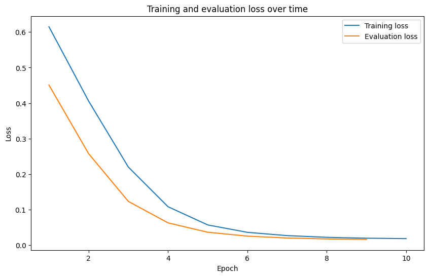

# Next:
# Add tools used in this overview (e.g. overview of the project)
# Create a small dataset with text generation, e.g. 50x spam/not_spam emails and train a classifier on it ✅
# Done, see notebook: https://colab.research.google.com/drive/14xr3KN_HINY5LjV0s2E-4i7v0o_XI3U8?usp=sharing
# Save the dataset to Hugging Face Datasets ✅
# Done, see dataset: https://huggingface.co/datasets/mrdbourke/learn_hf_food_not_food_image_captions
# Train a classifier on it ✅
# Save the model to the Hugging Face Model Hub ✅
# Create a with Gradio and test the model in the wild ✅ Text Classification with Hugging Face Transformers

1 TK - Overview
1.1 TK - What we’re going to build
In this project, we’re going to learn various aspects of the Hugging Face ecosystem whilst building a text classification model.
To keep things as practical as possible, we’re going to be bulding a food/not_food text classification model.
Given a piece of a text, our model will be able to predict if it’s about food or not.
This is the same kind of model I use in my own work on Nutrify (an app to help people learn about food).
More specifically, we’re going to follow the following steps:
- Problem defintion and dataset preparation - Getting a dataset/setting up the problem space.
- Finding, training and evaluating a model - Finding a text classification model suitable for our problem on Hugging Face and customizing it to our own dataset.
- Creating a demo and put our model into the real world - Sharing our trained model in a way others can access and use.
By the end of this project, you’ll have a trained model and demo on Hugging Face you can share with others.
TK image - see the finished product (demo)
Note
Note this is a hands-on project, so we’ll be focused on writing reusable code and building a model that can be used in the real world. If you are looking for explainers to the theory of what we’re doing, I’ll leave links in the extra-curriculum section.
1.2 TK - What is Hugging Face?
Hugging Face is a platform that offers access to many different kinds of open-source machine learning models and datasets.
They’re also the creators of the popular transformers library which is a Python-based library for working with pre-trained models as well as custom models and datasets.
If you’re getting into the world of AI and machine learning, you’re going to come across Hugging Face.
1.3 TK - Why Hugging Face?
Many of the biggest companies in the world use Hugging Face for their open-source machine learning projects including Apple, Google, Facebook (Meta), Microsoft, OpenAI, ByteDance and more.
TK image - image of people using Hugging Face
Not only does Hugging Face make it so you can use state-of-the-art machine learning models such as Stable Diffusion (for image generation) and Whipser (for audio transcription) easily, it also makes it so you can share your own models, datasets and resources.
Consider Hugging Face the homepage of your AI/machine learning profile.
1.4 TK - What is text classification?
Text classification is the process of assigning a category to a piece of text.
Where a category can be almost anything and a piece of text can be a word, phrase, sentence, paragraph or entire document.
TK image - example of text classification
Example text classification problems include:
| Problem | Description | Problem Type |
|---|---|---|
| Spam email detection | Is an email spam or not spam? | Binary classification (one thing or another) |
| Sentiment analysis | Is a piece of text positive, negative or neutral? | Multi-class classification (one thing from many) |
| Language detection | What language is a piece of text written in? | Multi-class classification (one thing from many) |
| Topic classification | What topic(s) does a news article belong to? | Multi-label classification (one or more things from many) |
| Hate speech detection | Is a comment hateful or not hateful? | Binary classification (one thing or another) |
| Product categorization | What categories does a product belong to? | Multi-label classification (one or more things from many) |
There are several different kinds of models you can use for text classification.
And each will have its pros and cons depending on the problem you’re working on.
Example text classification models include:
| Model | Description | Pros | Cons |
|---|---|---|---|
| Rule-based | Uses a set of rules to classify text (e.g. if text contains “sad” -> sentiment = low) | Simple, easy to understand | Requires manual creation of rules |
| Bag of Words | Counts the frequency of words in a piece of text | Simple, easy to understand | Doesn’t capture word order |
| TF-IDF | Weighs the importance of words in a piece of text | Simple, easy to understand | Doesn’t capture word order |
| Deep learning-based models | Uses neural networks to learn patterns in text | Can learn complex patterns at scale | Can require large amounts of data/compute power to run, not as easy to understand (can be hard to debug) |
We’re going to use a deep learning model our case.
Why?
Because Hugging Face helps us do so.
And in most cases, with a large enough dataset, a deep learning model will often perform better than a rule-based or other model.
1.5 TK - Why train your own text classification models?
You can use pre-trained models for text classification as well as API-powered models and LLMs such as GPT-4 or Gemini.
However, it’s often a good idea to train your own text classification models for a few reasons:
- They can be much faster than API-powered models (since they’re running on your own hardware, this can save on costs and time).
- They’re customized to your own data.
- They don’t require you to send your data elsewhere (privacy).
- If a service goes down, you’ll still have access to your model (reliability).
TK image - example of training your own model vs using an API-powered model
2 TK - Importing necessary libraries
Let’s get started!
First, we’ll import the required libraries.
If you’re running on your local computer, be sure to check out the getting setup guide (tk - link to getting setup guide) to make sure you have everything you need.
If you’re using Google Colab, many of them the following libraries will be installed by default.
However, we’ll have to install a few extras to get everything working.
Note
If you’re running on Google Colab, this notebook will work best with access to a GPU. To enable a GPU, go to Runtime ➡️ Change runtime type ➡️ Hardware accelerator ➡️ GPU.
We’ll need to install the following libraries from the Hugging Face ecosystem:
transformers- comes pre-installed on Google Colab but if you’re running on your local machine, you can install it viapip install transformers.datasets- a library for accessing and manipulating datasets on and off the Hugging Face Hub, you can install it viapip install datasets.evaluate- a library for evaluating machine learning model performance with various metrics, you can install it viapip install evaluate.accelerate- a library for training machine learning models faster, you can install it viapip install accelerate.gradio- a library for creating interactive demos of machine learning models, you can install it viapip install gradio.
We can also check the versions of our software with package_name.__version__.
# Install dependencies (this is mostly for Google Colab, as the other dependences are available by default in Colab)
try:
import datasets, evaluate, accelerate
import gradio as gr
except ModuleNotFoundError:
!pip install -U datasets evaluate accelerate gradio # -U stands for "upgrade" so we'll get the latest version by default
import datasets, evaluate, accelerate
import gradio as gr
import os
import random
import numpy as np
import pandas as pd
import torch
import transformers
from datasets import Dataset
print(f"Using transformers version: {transformers.__version__}")
print(f"Using datasets version: {datasets.__version__}")
print(f"Using torch version: {torch.__version__}")Using transformers version: 4.40.2
Using datasets version: 2.19.1
Using torch version: 2.2.0+cu121Wonderful, as long as your versions are the same or higher to the versions above, you should be able to run the code below.
3 TK - Getting a dataset
Okay, now we’re got the required libraries, let’s get a dataset.
Getting a dataset is one of the most important things a machine learning project.
The dataset you often determines the type of model you use as well as the quality of the outputs of that model.
Meaning, if you have a high quality dataset, chances are, your future model could also have high quality outputs.
It also means if your dataset is of poor quality, your model will likely also have poor quality outputs.
For a text classificaiton problem, your dataset will likely come in the form of text (e.g. a paragraph, sentence or phrase) and a label (e.g. what category the text belongs to).
- TK image - showcase what a supervised dataset looks like (e.g. text and label, this can be the dataset we’ve got on Hugging Face hub, showcase the different parts of the dataset as well including the name etc)
In our case, our dataset comes in the form of a collection of synthetic image captions and their corresponding labels (food or not food).
This is a dataset I’ve created earlier to help us practice building a text classification model.
You can find it on Hugging Face under the name mrdbourke/learn_hf_food_not_food_image_captions.
Resource
See how the food/not_food image caption dataset was created in the (TK - add notebook link and title, make this available on the website)
- TK - see dataset creation:
- Done, see notebook: https://colab.research.google.com/drive/14xr3KN_HINY5LjV0s2E-4i7v0o_XI3U8?usp=sharing
- Done, see dataset: https://huggingface.co/datasets/mrdbourke/learn_hf_food_not_food_image_captions
3.1 Where can you get more datasets?
The are many different places you can get datasets for text-based problems.
One of the best places is on the Hugging Face Hub, specifically huggingface.co/datasets.
Here you can find many different kinds of problem specific data such as text classification.
TK image - show example image of text classification datasets
3.2 Loading the dataset
Once we’ve found/prepared a dataset on the Hugging Face Hub, we can use the datasets library to load it.
To load a dataset we can use the datasets.load_dataset(path=NAME_OR_PATH_OF_DATASET) function and pass it the name/path of the dataset we want to load.
In our case, our dataset name is mrdbourke/learn_hf_food_not_food_image_captions.
And since our dataset is hosted on Hugging Face, when we run the following code for the first time, it will download it.
If your target dataset is quite large, this download may take a while.
However, once the dataset is downloaded, subsequent reloads will be mush faster.
# Load the dataset from Hugging Face Hub
dataset = datasets.load_dataset(path="mrdbourke/learn_hf_food_not_food_image_captions")
# Inspect the dataset
datasetDatasetDict({
train: Dataset({
features: ['text', 'label'],
num_rows: 250
})
})Dataset loaded!
Looks like our dataset has two features, text and label.
And 250 total rows (the number of examples in our dataset).
We can check the column names with dataset.column_names.
# What features are there?
dataset.column_names{'train': ['text', 'label']}Looks like our dataset comes with a train split already (the whole dataset).
We can access the train split with dataset["train"] (some datasets also come with built-in "test" splits too).
# Access the training split
dataset["train"]Dataset({
features: ['text', 'label'],
num_rows: 250
})How about we check out a single sample?
We can do so with indexing.
dataset["train"][0]{'text': 'Creamy cauliflower curry with garlic naan, featuring tender cauliflower in a rich sauce with cream and spices, served with garlic naan bread.',
'label': 'food'}Nice! We get back a dictionary with the keys text and label.
The text key contains the text of the image caption and the label key contains the label (food or not food).
3.3 TK - Inspect random examples from the dataset
At 250 total samples, our dataset isn’t too large.
So we could sit there and explore the samples one by one.
But whenever I interact with a new dataset, I like to view a bunch of random examples and get a feel of the data.
Doing so is inline with the data explorer’s motto: visualize, visualize, visualize!
As a rule of thumb, I like to view at least 20-100 random examples when interacting with a new dataset.
Let’s write some code to view 5 random indexes of our data and their corresponding text and labels at a time.
import random
random_indexs = random.sample(range(len(dataset["train"])), 5)
random_samples = dataset["train"][random_indexs]
print(f"[INFO] Random samples from dataset:\n")
for item in zip(random_samples["text"], random_samples["label"]):
print(f"Text: {item[0]} | Label: {item[1]}")[INFO] Random samples from dataset:
Text: Set of knitting needles with yarn waiting to be knitted | Label: not_food
Text: A bowl of sliced pears with a sprinkle of ginger and a side of honey | Label: food
Text: Sweet and spicy sushi roll with ingredients like mango and jalapeno. | Label: food
Text: Vibrant red curry with tofu and bell peppers, featuring tofu and sweet bell peppers in a rich coconut milk sauce. | Label: food
Text: Lawn mower stored in a shed | Label: not_foodBeautiful! Looks like our data contains a mix of shorter and longer sentences (between 5 and 20 words) of texts about food and not food.
We can get the unique labels in our dataset with dataset["train"].unique("label").
# Get unique label values
dataset["train"].unique("label")['food', 'not_food']If our dataset is small enough to fit into memory, we can count the number of different labels with Python’s collections.Counter (a method for counting objects in an iterable or mapping).
# Check number of each label
from collections import Counter
Counter(dataset["train"]["label"])Counter({'food': 125, 'not_food': 125})Excellent, looks like our dataset is well balanced with 125 samples of food and 125 samples of not food.
In a binary classification case, this is ideal.
If the classes were dramatically unbalanced (e.g. 90% food and 10% not food) we might have to consider collecting/creating more data.
But best to train a model and see how it goes before making any drastic dataset changes.
Because our dataset is small, we could also inspect it via a pandas DataFrame (however, this may not be possible for extremely large datasets).
# Turn our dataset into a DataFrame and get a random sample
food_not_food_df = pd.DataFrame(dataset["train"])
food_not_food_df.sample(7)| text | label | |
|---|---|---|
| 160 | Set of speakers perched on a shelf | not_food |
| 91 | Garage door with a remote control ready for use | not_food |
| 37 | Guitar leaning casually against a couch | not_food |
| 151 | Round wooden dining table with chairs gathered... | not_food |
| 199 | Crunchy sushi roll with a creamy filling, feat... | food |
| 116 | A girl feeding her rabbit in the garden | not_food |
| 109 | Jicama in a bowl, sprinkled with chili powder ... | food |
# Get the value counts of the label column
food_not_food_df["label"].value_counts()label
food 125
not_food 125
Name: count, dtype: int644 TK - Preparing data for text classification
UPTOHERE
- There are many ways to get data ready for various machine learning tasks, see: https://huggingface.co/docs/transformers/en/tasks/sequence_classification#preprocess
# Create mapping from id2label and label2id
id2label = {0: "not_food", 1: "food"}
label2id = {"not_food": 0, "food": 1}# Turn labels into 0 or 1 (e.g. 0 for "not_food", 1 for "food"), see: https://huggingface.co/docs/datasets/en/process#map
def map_labels_to_number(example):
example["label"] = label2id[example["label"]]
return example
dataset = dataset["train"].map(map_labels_to_number)
dataset[:5]{'text': ['Creamy cauliflower curry with garlic naan, featuring tender cauliflower in a rich sauce with cream and spices, served with garlic naan bread.',
'Set of books stacked on a desk',
'Watching TV together, a family has their dog stretched out on the floor',
'Wooden dresser with a mirror reflecting the room',
'Lawn mower stored in a shed'],
'label': [1, 0, 0, 0, 0]}dataset.shuffle()[:5]{'text': ["King-size bed with a white comforter inviting a good night's sleep",
'A slice of pizza with a spicy kick, featuring jalapeno peppers',
'Red brick fireplace with a mantel serving as a centerpiece',
'Creamy spinach and potato curry, featuring fluffy potatoes and nutritious spinach in a rich sauce with cream and garam masala.',
'Set of cookie cutters collected in a jar'],
'label': [0, 1, 0, 1, 0]}4.1 TK - Split the dataset into training and test sets
# Create train/test splits, see: https://huggingface.co/docs/datasets/en/process#split
dataset = dataset.train_test_split(test_size=0.2, seed=42) # note: seed isn't needed, just here for reproducibility, without it you will get different splits each time you run the cell
datasetDatasetDict({
train: Dataset({
features: ['text', 'label'],
num_rows: 200
})
test: Dataset({
features: ['text', 'label'],
num_rows: 50
})
})random_idx_train = random.randint(0, len(dataset["train"]))
random_sample_train = dataset["train"][random_idx_train]
random_idx_test = random.randint(0, len(dataset["test"]))
random_sample_test = dataset["test"][random_idx_test]
print(f"[INFO] Random sample from training dataset:")
print(f"Text: {random_sample_train['text']} | Label: {random_sample_train['label']} ({id2label[random_sample_train['label']]})\n")
print(f"[INFO] Random sample from testing dataset:")
print(f"Text: {random_sample_test['text']} | Label: {random_sample_test['label']} ({id2label[random_sample_test['label']]})")[INFO] Random sample from training dataset:
Text: Pizza with a unique topping combination of pineapple and ham | Label: 1 (food)
[INFO] Random sample from testing dataset:
Text: Tangy tomato curry with chicken, featuring tender chicken pieces in a zesty tomato-based sauce with onions and spices. | Label: 1 (food)4.2 TK - Tokenizing text data
- TK - what is tokenization? E.g. turning data from text to numbers (machines like numbers)
- TK - see OpenAI guide on tokenization: https://openai.com/tokenization/
from transformers import AutoTokenizer
tokenizer = AutoTokenizer.from_pretrained("distilbert/distilbert-base-uncased")
def preprocess_function(examples):
return tokenizer(examples["text"], truncation=True)/home/daniel/miniconda3/envs/ai/lib/python3.11/site-packages/huggingface_hub/file_download.py:1132: FutureWarning: `resume_download` is deprecated and will be removed in version 1.0.0. Downloads always resume when possible. If you want to force a new download, use `force_download=True`.
warnings.warn(tokenized_dataset = dataset.map(preprocess_function, batched=True)
tokenized_datasetDatasetDict({
train: Dataset({
features: ['text', 'label', 'input_ids', 'attention_mask'],
num_rows: 200
})
test: Dataset({
features: ['text', 'label', 'input_ids', 'attention_mask'],
num_rows: 50
})
})tokenized_dataset["train"][0], tokenized_dataset["test"][0]({'text': 'Set of headphones placed on a desk',
'label': 0,
'input_ids': [101, 2275, 1997, 2132, 19093, 2872, 2006, 1037, 4624, 102],
'attention_mask': [1, 1, 1, 1, 1, 1, 1, 1, 1, 1]},
{'text': 'A slice of pepperoni pizza with a layer of melted cheese',
'label': 1,
'input_ids': [101,
1037,
14704,
1997,
11565,
10698,
10733,
2007,
1037,
6741,
1997,
12501,
8808,
102],
'attention_mask': [1, 1, 1, 1, 1, 1, 1, 1, 1, 1, 1, 1, 1, 1]})4.3 TK - Make sure all text is the same length
# Collate examples and pad them each batch
# TK - this is not 100% needed as the tokenizer can handle padding, but it's good to know how to do it
from transformers import DataCollatorWithPadding
data_collator = DataCollatorWithPadding(tokenizer=tokenizer,
padding=True)
data_collatorDataCollatorWithPadding(tokenizer=DistilBertTokenizerFast(name_or_path='distilbert/distilbert-base-uncased', vocab_size=30522, model_max_length=512, is_fast=True, padding_side='right', truncation_side='right', special_tokens={'unk_token': '[UNK]', 'sep_token': '[SEP]', 'pad_token': '[PAD]', 'cls_token': '[CLS]', 'mask_token': '[MASK]'}, clean_up_tokenization_spaces=True), added_tokens_decoder={
0: AddedToken("[PAD]", rstrip=False, lstrip=False, single_word=False, normalized=False, special=True),
100: AddedToken("[UNK]", rstrip=False, lstrip=False, single_word=False, normalized=False, special=True),
101: AddedToken("[CLS]", rstrip=False, lstrip=False, single_word=False, normalized=False, special=True),
102: AddedToken("[SEP]", rstrip=False, lstrip=False, single_word=False, normalized=False, special=True),
103: AddedToken("[MASK]", rstrip=False, lstrip=False, single_word=False, normalized=False, special=True),
}, padding=True, max_length=None, pad_to_multiple_of=None, return_tensors='pt')5 TK - Setup Evaluation Metric
- TK - What evaluation metrics are there?
See: https://huggingface.co/docs/transformers/en/tasks/sequence_classification#evaluate
import evaluate
import numpy as np
accuracy = evaluate.load("accuracy")
def compute_metrics(eval_pred):
predictions, labels = eval_pred
predictions = np.argmax(predictions, axis=1)
return accuracy.compute(predictions=predictions, references=labels)6 TK - Training our model
See: https://huggingface.co/docs/transformers/en/tasks/sequence_classification#train
Steps for training:
- Define model
- Define training arguments
- Pass training arguments to Trainer
- Call
train()
- TK - What kind of training are we doing? Supervised learning + fine-tuning an existing model
from transformers import AutoModelForSequenceClassification, Trainer, TrainingArguments
model = AutoModelForSequenceClassification.from_pretrained(
pretrained_model_name_or_path="distilbert/distilbert-base-uncased",
num_labels=2, # can customize this to the number of classes in your dataset
id2label=id2label,
label2id=label2id
)/home/daniel/miniconda3/envs/ai/lib/python3.11/site-packages/huggingface_hub/file_download.py:1132: FutureWarning: `resume_download` is deprecated and will be removed in version 1.0.0. Downloads always resume when possible. If you want to force a new download, use `force_download=True`.
warnings.warn(
Some weights of DistilBertForSequenceClassification were not initialized from the model checkpoint at distilbert/distilbert-base-uncased and are newly initialized: ['classifier.bias', 'classifier.weight', 'pre_classifier.bias', 'pre_classifier.weight']
You should probably TRAIN this model on a down-stream task to be able to use it for predictions and inference.- TK - notice this output on pretraining advice
Some weights of DistilBertForSequenceClassification were not initialized from the model checkpoint at distilbert/distilbert-base-uncased and are newly initialized: [‘classifier.bias’, ‘classifier.weight’, ‘pre_classifier.bias’, ‘pre_classifier.weight’] You should probably TRAIN this model on a down-stream task to be able to use it for predictions and inference.
Let’s try and make a prediction with our model and see what happens.
# Try and make a prediction with the loaded model (this will error)
model(**tokenized_dataset["train"][:2])TypeError: DistilBertForSequenceClassification.forward() got an unexpected keyword argument 'text'6.1 TK - Create a directory for saving models
# Create model output directory
from pathlib import Path
# Create models directory
models_dir = Path("models")
models_dir.mkdir(exist_ok=True)
# Create model save name
model_save_name = "learn_hf_food_not_food_text_classifier-distilbert-base-uncased"
# Create model save path
model_save_dir = Path(models_dir, model_save_name)
model_save_dirPosixPath('models/learn_hf_food_not_food_text_classifier-distilbert-base-uncased')6.2 TK - Setup training arguments
- TK - add markdown table of different parameters and what they do (e.g. most of the common ones but add a note that these may want to be changed depending on the problem + there are many more in the docs)
# Create training arguments
# See: https://huggingface.co/docs/transformers/v4.40.2/en/main_classes/trainer#transformers.TrainingArguments
# TODO: Turn off Weights & Biases logging? Or add it in?
# TK - exercise: spend 10 minutes reading the TrainingArguments documentation
training_args = TrainingArguments(
output_dir=model_save_dir, # TODO: change this path to model save path, e.g. 'learn_hf_food_not_food_text_classifier_model'
learning_rate=2e-5,
per_device_train_batch_size=32,
per_device_eval_batch_size=32,
num_train_epochs=10,
weight_decay=0.01,
evaluation_strategy="epoch",
save_strategy="epoch",
load_best_model_at_end=True, # load the best model when finished training
logging_strategy="epoch", # log training results every epoch
report_to="none" # optional: log experiments to Weights & Biases/other similar experimenting tracking services (we'll turn this off for now)
# push_to_hub=True # optional: automatically upload the model to the Hub (we'll do this manually later on)
# hub_token="your_token_here" # optional: add your Hugging Face Hub token to push to the Hub (will default to huggingface-cli login)
)6.3 TK - Setup trainer class
# Setup Trainer
# Note: Trainer applies dynamic padding by default when you pass `tokenizer` to it.
# In this case, you don't need to specify a data collator explicitly.
trainer = Trainer(
model=model,
args=training_args,
train_dataset=tokenized_dataset["train"],
eval_dataset=tokenized_dataset["test"],
tokenizer=tokenizer,
#data_collator=data_collator, # not necessary if using pre-built tokenizer padding (default)
compute_metrics=compute_metrics
)6.4 TK - Train the model
results = trainer.train()
[70/70 00:06, Epoch 10/10]
| Epoch | Training Loss | Validation Loss | Accuracy |
|---|---|---|---|
| 1 | 0.615200 | 0.450918 | 1.000000 |
| 2 | 0.405600 | 0.257541 | 1.000000 |
| 3 | 0.219900 | 0.123121 | 1.000000 |
| 4 | 0.108100 | 0.062602 | 1.000000 |
| 5 | 0.056800 | 0.036242 | 1.000000 |
| 6 | 0.035900 | 0.025235 | 1.000000 |
| 7 | 0.026700 | 0.019986 | 1.000000 |
| 8 | 0.021900 | 0.017336 | 1.000000 |
| 9 | 0.019400 | 0.016042 | 1.000000 |
| 10 | 0.018200 | 0.015633 | 1.000000 |
6.5 TK - Inspect the model results
# TK - go through these
total_train_time = results.metrics["train_runtime"]
train_samples_per_second = results.metrics["train_samples_per_second"]
print(f"Total training time: {total_train_time} seconds")
print(f"Training samples per second: {train_samples_per_second}")Total training time: 6.7168 seconds
Training samples per second: 297.761# TK - get loss curves
trainer_history = trainer.state.log_history[:-1]
trainer_training_time = trainer_history[-1]
trainer_history[:5][{'loss': 0.6152,
'grad_norm': 3.3377952575683594,
'learning_rate': 1.8e-05,
'epoch': 1.0,
'step': 7},
{'eval_loss': 0.45091766119003296,
'eval_accuracy': 1.0,
'eval_runtime': 0.0113,
'eval_samples_per_second': 4423.998,
'eval_steps_per_second': 176.96,
'epoch': 1.0,
'step': 7},
{'loss': 0.4056,
'grad_norm': 2.4789676666259766,
'learning_rate': 1.6000000000000003e-05,
'epoch': 2.0,
'step': 14},
{'eval_loss': 0.25754112005233765,
'eval_accuracy': 1.0,
'eval_runtime': 0.0124,
'eval_samples_per_second': 4023.931,
'eval_steps_per_second': 160.957,
'epoch': 2.0,
'step': 14},
{'loss': 0.2199,
'grad_norm': 1.6385667324066162,
'learning_rate': 1.4e-05,
'epoch': 3.0,
'step': 21}]# Extract training and evaluation metrics
trainer_history_training_set = []
trainer_history_eval_set = []
for item in trainer_history[:-1]:
item_keys = list(item.keys())
if any("eval" in item for item in item_keys):
trainer_history_eval_set.append(item)
else:
trainer_history_training_set.append(item)trainer_history_training_df = pd.DataFrame(trainer_history_training_set)
trainer_history_eval_df = pd.DataFrame(trainer_history_eval_set)
trainer_history_training_df| loss | grad_norm | learning_rate | epoch | step | |
|---|---|---|---|---|---|
| 0 | 0.6152 | 3.337795 | 0.000018 | 1.0 | 7 |
| 1 | 0.4056 | 2.478968 | 0.000016 | 2.0 | 14 |
| 2 | 0.2199 | 1.638567 | 0.000014 | 3.0 | 21 |
| 3 | 0.1081 | 0.902428 | 0.000012 | 4.0 | 28 |
| 4 | 0.0568 | 0.546689 | 0.000010 | 5.0 | 35 |
| 5 | 0.0359 | 0.347724 | 0.000008 | 6.0 | 42 |
| 6 | 0.0267 | 0.309794 | 0.000006 | 7.0 | 49 |
| 7 | 0.0219 | 0.273363 | 0.000004 | 8.0 | 56 |
| 8 | 0.0194 | 0.244860 | 0.000002 | 9.0 | 63 |
| 9 | 0.0182 | 0.245236 | 0.000000 | 10.0 | 70 |
trainer_history_eval_df| eval_loss | eval_accuracy | eval_runtime | eval_samples_per_second | eval_steps_per_second | epoch | step | |
|---|---|---|---|---|---|---|---|
| 0 | 0.450918 | 1.0 | 0.0113 | 4423.998 | 176.960 | 1.0 | 7 |
| 1 | 0.257541 | 1.0 | 0.0124 | 4023.931 | 160.957 | 2.0 | 14 |
| 2 | 0.123121 | 1.0 | 0.0115 | 4338.068 | 173.523 | 3.0 | 21 |
| 3 | 0.062602 | 1.0 | 0.0115 | 4349.855 | 173.994 | 4.0 | 28 |
| 4 | 0.036242 | 1.0 | 0.0112 | 4448.585 | 177.943 | 5.0 | 35 |
| 5 | 0.025235 | 1.0 | 0.0122 | 4100.485 | 164.019 | 6.0 | 42 |
| 6 | 0.019986 | 1.0 | 0.0116 | 4327.147 | 173.086 | 7.0 | 49 |
| 7 | 0.017336 | 1.0 | 0.0113 | 4406.522 | 176.261 | 8.0 | 56 |
| 8 | 0.016042 | 1.0 | 0.0116 | 4315.128 | 172.605 | 9.0 | 63 |
# Plot training and evaluation loss
import matplotlib.pyplot as plt
plt.figure(figsize=(10, 6))
plt.plot(trainer_history_training_df["epoch"], trainer_history_training_df["loss"], label="Training loss")
plt.plot(trainer_history_eval_df["epoch"], trainer_history_eval_df["eval_loss"], label="Evaluation loss")
plt.xlabel("Epoch")
plt.ylabel("Loss")
plt.title("Training and evaluation loss over time")
plt.legend()
plt.show()
6.6 TK - Save the model for later use
# Save model
# See docs: https://huggingface.co/docs/transformers/en/main_classes/trainer#transformers.Trainer.save_model
trainer.save_model(model_save_dir)6.7 TK - Push the model to Hugging Face Hub
TK - optional to share the model/use elsewhere
- see here: https://huggingface.co/docs/transformers/en/model_sharing
- also see here for how to setup
huggingface-cliso you can write your model to your account
# TK - have a note here for the errors
# Note: you may see the following error
# 403 Forbidden: You don't have the rights to create a model under the namespace "mrdbourke".
# Cannot access content at: https://huggingface.co/api/repos/create.
# If you are trying to create or update content,make sure you have a token with the `write` role.# TK - Push model to hub (for later re-use)
# TODO: Push this model to the hub to be able to use it later
# TK - this requires a "write" token from the Hugging Face Hub
# TK - see docs: https://huggingface.co/docs/transformers/en/main_classes/trainer#transformers.Trainer.push_to_hub
# TK - for example, on my local computer, my token is saved to: "/home/daniel/.cache/huggingface/token"
# TK - Can create a model card with create_model_card()
# see here: https://huggingface.co/docs/transformers/v4.41.3/en/main_classes/trainer#transformers.Trainer.create_model_card
trainer.push_to_hub(
commit_message="Uploading food not food text classifier model" # set to False if you want the model to be public
# token="YOUR_HF_TOKEN_HERE" # note: this will default to the token you have saved in your Hugging Face config
)CommitInfo(commit_url='https://huggingface.co/mrdbourke/learn_hf_food_not_food_text_classifier-distilbert-base-uncased/commit/7c9a4a6b17da981559f484538d51f6ff9a14c12d', commit_message='Uploading food not food text classifier model', commit_description='', oid='7c9a4a6b17da981559f484538d51f6ff9a14c12d', pr_url=None, pr_revision=None, pr_num=None)- TK - note: this will make the model public, to make it private,
See the model here saved for later: https://huggingface.co/mrdbourke/learn_hf_food_not_food_text_classifier-distilbert-base-uncased
6.8 TK - Make and evaluate predictions on the test set
# Perform predictions on the test set
predictions_all = trainer.predict(tokenized_dataset["test"])
prediction_metrics = predictions_all.metrics
prediction_metrics{'test_loss': 0.015632618218660355,
'test_accuracy': 1.0,
'test_runtime': 0.0391,
'test_samples_per_second': 1280.07,
'test_steps_per_second': 51.203}predictions_allPredictionOutput(predictions=array([[-2.261428 , 1.890655 ],
[ 1.8613493, -1.8532594],
[-2.2970695, 1.9171791],
[ 2.187019 , -2.1593657],
[ 2.1193414, -2.1615388],
[-2.2868803, 1.9454829],
[ 2.0827348, -2.1099336],
[ 2.154141 , -2.1266923],
[-2.279855 , 1.9362432],
[-2.277952 , 1.9518106],
[-2.2772808, 1.9423369],
[-1.9777709, 1.5732591],
[ 2.1512635, -2.0508409],
[-2.3032587, 1.9534686],
[-2.138177 , 1.7531359],
[ 2.194142 , -2.1277084],
[-2.2709608, 1.9498663],
[ 1.9596925, -1.919577 ],
[-2.2827635, 1.9249418],
[-2.290854 , 1.9592198],
[-2.2823153, 1.8799024],
[-2.3003585, 1.9387653],
[ 2.043029 , -2.0384376],
[ 2.0885575, -2.1244206],
[-2.2873669, 1.9443382],
[-2.2972584, 1.9009027],
[-2.2450745, 1.8596792],
[ 2.1050394, -2.040059 ],
[-2.2972147, 1.8946056],
[ 2.130832 , -2.133735 ],
[-2.2846339, 1.9422101],
[-2.2931519, 1.9279182],
[-2.3040657, 1.9485677],
[ 2.1816792, -2.141174 ],
[-2.3019922, 1.9271733],
[-2.2885954, 1.9124153],
[-2.2813184, 1.9542999],
[-2.304743 , 1.8892938],
[ 2.1249578, -2.089177 ],
[ 2.043159 , -1.941504 ],
[-2.1469579, 1.8099191],
[-2.269732 , 1.9235427],
[-2.0776005, 1.7352381],
[ 1.9634217, -2.0820174],
[-2.2788396, 1.9341636],
[-2.2946444, 1.9408271],
[-2.2920046, 1.9059081],
[-2.3030152, 1.9264866],
[ 2.1768198, -2.1458352],
[-2.301217 , 1.9053475]], dtype=float32), label_ids=array([1, 0, 1, 0, 0, 1, 0, 0, 1, 1, 1, 1, 0, 1, 1, 0, 1, 0, 1, 1, 1, 1,
0, 0, 1, 1, 1, 0, 1, 0, 1, 1, 1, 0, 1, 1, 1, 1, 0, 0, 1, 1, 1, 0,
1, 1, 1, 1, 0, 1]), metrics={'test_loss': 0.015632618218660355, 'test_accuracy': 1.0, 'test_runtime': 0.0391, 'test_samples_per_second': 1280.07, 'test_steps_per_second': 51.203})predictions_all._asdict().keys()dict_keys(['predictions', 'label_ids', 'metrics'])import torch
pred_probs = torch.softmax(torch.tensor(predictions_all.predictions), dim=1)
pred_labels = np.argmax(predictions_all.predictions, axis=1)
true_labels = dataset["test"]["label"]
# Calculate accuracy
from sklearn.metrics import accuracy_score
accuracy = accuracy_score(true_labels, pred_labels)
accuracy1.0# Make a DataFrame of test predictions
test_predictions_df = pd.DataFrame({
"text": dataset["test"]["text"],
"true_label": true_labels,
"pred_label": pred_labels,
"pred_prob": torch.max(pred_probs, dim=1).values
})
test_predictions_df.head()| text | true_label | pred_label | pred_prob | |
|---|---|---|---|---|
| 0 | A slice of pepperoni pizza with a layer of mel... | 1 | 1 | 0.984512 |
| 1 | Red brick fireplace with a mantel serving as a... | 0 | 0 | 0.976215 |
| 2 | A bowl of sliced bell peppers with a sprinkle ... | 1 | 1 | 0.985432 |
| 3 | Set of mugs hanging on a hook | 0 | 0 | 0.987212 |
| 4 | Standing floor lamp providing light next to an... | 0 | 0 | 0.986358 |
# Show 10 examples with low prediction probability
# TK - this is good to find samples where the model is unsure
test_predictions_df.sort_values("pred_prob").head(10)| text | true_label | pred_label | pred_prob | |
|---|---|---|---|---|
| 11 | A close-up shot of a cheesy pizza slice being ... | 1 | 1 | 0.972105 |
| 1 | Red brick fireplace with a mantel serving as a... | 0 | 0 | 0.976215 |
| 42 | Boxes of apples, pears, pineapple, manadrins a... | 1 | 1 | 0.978392 |
| 17 | Relaxing on the porch, a couple enjoys the com... | 0 | 0 | 0.979753 |
| 14 | Two handfuls of bananas in a fruit bowl with g... | 1 | 1 | 0.979990 |
| 40 | A bowl of cherries with a sprig of mint for ga... | 1 | 1 | 0.981236 |
| 39 | A close-up of a woman practicing yoga in the l... | 0 | 0 | 0.981741 |
| 43 | Set of muffin tins stacked together | 0 | 0 | 0.982799 |
| 22 | Two people sitting at a dining room table with... | 0 | 0 | 0.983398 |
| 26 | A fruit platter with a variety of exotic fruit... | 1 | 1 | 0.983774 |
7 TK - Make and inspect predictions on new text data
UPTOHERE - load the model (locally + from Hub) - make sure to change the save paths when loading the model to the new paths - make predictions on new text data - build a demo with Gradio (optional)
Making predictions on our own text options.
See: https://huggingface.co/docs/transformers/en/tasks/sequence_classification#inference
model_save_dirPosixPath('models/learn_hf_food_not_food_text_classifier-distilbert-base-uncased')# Setup local model path
local_model_path = "models/learn_hf_food_not_food_text_classifier-distilbert-base-uncased"
# Setup Hugging Face model path (see: https://huggingface.co/mrdbourke/learn_hf_food_not_food_text_classifier-distilbert-base-uncased)
huggingface_model_path = "mrdbourke/learn_hf_food_not_food_text_classifier-distilbert-base-uncased"7.1 TK - Pipeline mode
- Tk - what is a pipeline?
# TODO: TK - set device agnostic code for CUDA/Mac/CPU?
def set_device():
"""
Set device to CUDA if available, else MPS (Mac), else CPU.
This defaults to using the best available device (usually).
"""
if torch.cuda.is_available():
device = torch.device("cuda")
elif torch.backends.mps.is_available() and torch.backends.mps.is_built():
device = torch.device("mps")
else:
device = torch.device("cpu")
return device
DEVICE = set_device()
print(f"[INFO] Using device: {DEVICE}")[INFO] Using device: cudaimport torch
from transformers import pipeline
# Setup batch size for batched inference (can be adjusted depending on how much memory is available)
# TK - why use batch size? -> multiple samples at inference = faster
BATCH_SIZE = 64
food_not_food_classifier = pipeline(task="text-classification",
model=local_model_path,
batch_size=BATCH_SIZE,
device=DEVICE)sample_text_food = "A delicious photo of a plate of scrambled eggs, bacon and toast"
food_not_food_classifier(sample_text_food)[{'label': 'food', 'score': 0.99871826171875}]sample_text_not_food = "A yellow tractor driving over the hill"
food_not_food_classifier(sample_text_not_food)[{'label': 'not_food', 'score': 0.9989410042762756}]# Pipeline also works with remote models (will have to laod the model locally first)
food_not_food_classifier_remote = pipeline(task="text-classification",
model=huggingface_model_path,
batch_size=BATCH_SIZE,
device=DEVICE)
food_not_food_classifier_remote("This is some new text about bananas and pancakes and ice cream")[{'label': 'food', 'score': 0.9981549382209778}]7.2 TK - Batch prediction
- TK - what is batch prediction?
# Predicting works with lists
# Can find the examples with highest confidence and keep those
sentences = [
"I whipped up a fresh batch of code, but it seems to have a syntax error.",
"We need to marinate these ideas overnight before presenting them to the client.",
"The new software is definitely a spicy upgrade, taking some time to get used to.",
"Her social media post was the perfect recipe for a viral sensation.",
"He served up a rebuttal full of facts, leaving his opponent speechless.",
"The team needs to simmer down a bit before tackling the next challenge.",
"Our budget is a bit thin, so we'll have to use budget-friendly materials for this project.",
"The presentation was a delicious blend of humor and information, keeping the audience engaged.",
"Daniel Bourke is really cool :D",
"My favoruite food is biltong!"
]
food_not_food_classifier(sentences)[{'label': 'not_food', 'score': 0.9410305619239807},
{'label': 'not_food', 'score': 0.9650871753692627},
{'label': 'not_food', 'score': 0.9215793609619141},
{'label': 'not_food', 'score': 0.9115400910377502},
{'label': 'not_food', 'score': 0.9625208377838135},
{'label': 'not_food', 'score': 0.9476941823959351},
{'label': 'not_food', 'score': 0.9451109170913696},
{'label': 'not_food', 'score': 0.9027702808380127},
{'label': 'not_food', 'score': 0.9954429864883423},
{'label': 'food', 'score': 0.7653573155403137}]7.3 TK - Time our model across larger sample sizes
- TK - our model is fast!
%%time
import time
for i in [10, 100, 1000, 10_000]:
sentences_big = sentences * i
print(f"[INFO] Number of sentences: {len(sentences_big)}")
start_time = time.time()
food_not_food_classifier(sentences_big)
end_time = time.time()
print(f"[INFO] Inference time for {len(sentences_big)} sentences: {round(end_time - start_time, 5)} seconds.")
print(f"[INFO] Avg inference time per sentence: {round((end_time - start_time) / len(sentences_big), 8)} seconds.")
print()You seem to be using the pipelines sequentially on GPU. In order to maximize efficiency please use a dataset[INFO] Number of sentences: 100
[INFO] Inference time for 100 sentences: 0.07726 seconds.
[INFO] Avg inference time per sentence: 0.0007726 seconds.
[INFO] Number of sentences: 1000
[INFO] Inference time for 1000 sentences: 0.32344 seconds.
[INFO] Avg inference time per sentence: 0.00032344 seconds.
[INFO] Number of sentences: 10000
[INFO] Inference time for 10000 sentences: 1.43834 seconds.
[INFO] Avg inference time per sentence: 0.00014383 seconds.
[INFO] Number of sentences: 100000
[INFO] Inference time for 100000 sentences: 14.4585 seconds.
[INFO] Avg inference time per sentence: 0.00014459 seconds.
CPU times: user 15.8 s, sys: 552 ms, total: 16.3 s
Wall time: 16.3 s7.4 PyTorch mode
from transformers import AutoTokenizer
tokenizer = AutoTokenizer.from_pretrained("learn_hf_food_not_food_text_classifier_model")
inputs = tokenizer(sample_text_food, return_tensors="pt")import torch
from transformers import AutoModelForSequenceClassification
model = AutoModelForSequenceClassification.from_pretrained("learn_hf_food_not_food_text_classifier_model")
with torch.no_grad():
logits = model(**inputs).logits# Get predicted class
predicted_class_id = logits.argmax().item()
print(f"Text: {sample_text_food}")
print(f"Predicted label: {model.config.id2label[predicted_class_id]}")Text: A delicious photo of a plate of scrambled eggs, bacon and toast
Predicted label: food8 TK - Turning our model into a demo
- TK - why build a demo?
- try our model in the wild, see samples which don’t work properly, e.g. use cases we didn’t think of… “pie”/“tea” (short words), “hjflasdjhfhwerr” (gibberish)
- TK - build a demo with Gradio, see it here: https://www.gradio.app/guides/quickstart
- TK - requires
pip install gradio
# Set top_k=2 to get top 2 predictions (in our case, food and not_food)
food_not_food_classifier("Testing the pipeline", top_k=2)[{'label': 'not_food', 'score': 0.9977033734321594},
{'label': 'food', 'score': 0.002296620048582554}]8.1 TK - Creating a simple function to perform inference
- TK - this is required for gradio -> output a dict of {“label_1”: probability_1, “label_2”: probability_2…}
- 2 options:
- Local demo (for our own inspection)
- Hosted demo on Hugging Face Spaces (for sharing with others)
import gradio as gr
def food_not_food_classifier(text):
food_not_food_classifier = pipeline(task="text-classification",
model=local_model_path,
batch_size=64,
device="cuda" if torch.cuda.is_available() else "cpu",
top_k=None) # return all possible scores (not just top-1)
# Get outputs from pipeline (as a list of dicts)
outputs = food_not_food_classifier(text)[0]
# Format output for Gradio (e.g. {"label_1": probability_1, "label_2": probability_2})
output_dict = {}
for item in outputs:
output_dict[item["label"]] = item["score"]
return output_dict
food_not_food_classifier("My lunch today was bacon and eggs"){'food': 0.7966588139533997, 'not_food': 0.20334114134311676}demo = gr.Interface(
fn=food_not_food_classifier,
inputs="text",
outputs=gr.Label(num_top_classes=2), # show top 2 classes (that's all we have)
title="Food or Not Food Classifier",
description="A text classifier to determine if a sentence is about food or not food.",
examples=[["I whipped up a fresh batch of code, but it seems to have a syntax error."],
["A delicious photo of a plate of scrambled eggs, bacon and toast."]])
demo.launch()Running on local URL: http://127.0.0.1:7863
To create a public link, set `share=True` in `launch()`.8.2 TK - Uploading/running the demo
Options: * Uploading manually to Hugging Face Spaces - hf.co/new-space * Uploading programmatically to Hugging Face Spaces - https://www.gradio.app/guides/using-hugging-face-integrations#hosting-your-gradio-demos-on-spaces * Running the demo locally - Interface.launch() (only works if you have Gradio installed)
# Make a directory for demos
demos_dir = Path("../demos")
demos_dir.mkdir(exist_ok=True)
# Create a folder for the food_not_food_text_classifer demo
food_not_food_text_classifier_demo_dir = Path(demos_dir, "food_not_food_text_classifier")
food_not_food_text_classifier_demo_dir.mkdir(exist_ok=True)%%writefile ../demos/food_not_food_text_classifier/app.py
import torch
import gradio as gr
from transformers import pipeline
def food_not_food_classifier(text):
# Set up text classification pipeline
food_not_food_classifier = pipeline(task="text-classification",
model="mrdbourke/learn_hf_food_not_food_text_classifier-distilbert-base-uncased", # link to model on HF Hub
device="cuda" if torch.cuda.is_available() else "cpu",
top_k=None) # return all possible scores (not just top-1)
# Get outputs from pipeline (as a list of dicts)
outputs = food_not_food_classifier(text)[0]
# Format output for Gradio (e.g. {"label_1": probability_1, "label_2": probability_2})
output_dict = {}
for item in outputs:
output_dict[item["label"]] = item["score"]
return output_dict
description = """
A text classifier to determine if a sentence is about food or not food.
TK - See source code:
"""
demo = gr.Interface(fn=food_not_food_classifier,
inputs="text",
outputs=gr.Label(num_top_classes=2), # show top 2 classes (that's all we have)
title="🍗🚫🥑 Food or Not Food Text Classifier",
description=description,
examples=[["I whipped up a fresh batch of code, but it seems to have a syntax error."],
["A delicious photo of a plate of scrambled eggs, bacon and toast."]])
if __name__ == "__main__":
demo.launch()Overwriting ../demos/food_not_food_text_classifier/app.pyTK - note: you will often need a requirements.txt file
===== Application Startup at 2024-06-13 05:37:21 =====
Traceback (most recent call last):
File "/home/user/app/app.py", line 1, in <module>
import torch
ModuleNotFoundError: No module named 'torch'%%writefile ../demos/food_not_food_text_classifier/requirements.txt
gradio
torch
transformersOverwriting ../demos/food_not_food_text_classifier/requirements.txtCreate a README.md file with metadata instructions (these are specific to Hugging Face Spaces).
%%writefile ../demos/food_not_food_text_classifier/README.md
---
title: Food Not Food Text Classifier
emoji: 🍗🚫🥑
colorFrom: blue
colorTo: yellow
sdk: gradio
sdk_version: 4.36.1
app_file: app.py
pinned: false
license: apache-2.0
---
# 🍗🚫🥑 Food Not Food Text Classifier
Small demo to showcase a text classifier to determine if a sentence is about food or not food.
DistillBERT model fine-tuned on a small synthetic dataset of 250 generated [Food or Not Food image captions](https://huggingface.co/datasets/mrdbourke/learn_hf_food_not_food_image_captions).
TK - see the demo notebook on how to create thisOverwriting ../demos/food_not_food_text_classifier/README.mdfrom huggingface_hub import (
create_repo,
get_full_repo_name,
upload_file, # for uploading a single file
upload_folder # for uploading multiple files (in a folder)
)
path_to_demo_folder = "../demos/food_not_food_text_classifier"
repo_type = "space" # we're creating a Hugging Face Space
# Create a repo on Hugging Face
# see docs: https://huggingface.co/docs/huggingface_hub/v0.23.3/en/package_reference/hf_api#huggingface_hub.HfApi.create_repo
target_space_name = "learn_hf_food_not_food_text_classifier_demo"
print(f"[INFO] Creating repo: {target_space_name}")
create_repo(
repo_id=target_space_name,
#token="YOUR_HF_TOKEN"
private=False, # set to True if you want the repo to be private
repo_type=repo_type, # create a Hugging Face Space
space_sdk="gradio", # we're using Gradio to build our demo
exist_ok=True, # set to False if you want to create the repo even if it already exists
)
# Get the full repo name (e.g. "mrdbourke/learn_hf_food_not_food_text_classifier_demo")
full_repo_name = get_full_repo_name(model_id=target_space_name)
print(f"[INFO] Full repo name: {full_repo_name}")
# Upload a file
# see docs: https://huggingface.co/docs/huggingface_hub/v0.23.3/en/package_reference/hf_api#huggingface_hub.HfApi.upload_file
print(f"[INFO] Uploading {path_to_demo_folder} to repo: {full_repo_name}")
file_url = upload_folder(
folder_path=path_to_demo_folder,
path_in_repo=".", # save to the root of the repo
repo_id=full_repo_name,
repo_type=repo_type,
#token="YOUR_HF_TOKEN"
commit_message="Uploading food not food text classifier demo app.py"
)[INFO] Creating repo: learn_hf_food_not_food_text_classifier_demo
[INFO] Full repo name: mrdbourke/learn_hf_food_not_food_text_classifier_demo
[INFO] Uploading ../demos/food_not_food_text_classifier to repo: mrdbourke/learn_hf_food_not_food_text_classifier_demo- TK - see the demo link here: https://huggingface.co/spaces/mrdbourke/learn_hf_food_not_food_text_classifier_demo
8.3 TK - Testing the live demo
from IPython.display import HTML
# You can get embeddable HTML code for your demo by clicking the "Embed" button on the demo page
HTML('''
<iframe
src="https://mrdbourke-learn-hf-food-not-food-text-classifier-demo.hf.space"
frameborder="0"
width="850"
height="450"
></iframe>
''')9 TK - Exercises and Extensions
- Where does our model fail? E.g. what kind of sentences does it struggle with? How could you fix this?
- Make an extra 10-50 examples of these and add them to the dataset and then retrain the model
- See here: https://discuss.huggingface.co/t/how-do-i-add-things-rows-to-an-already-saved-dataset/27423
- Build your own text classifier on a different dataset/your own custom dataset
- How might we make our dataset multi-class? (e.g. more than 2 classes)